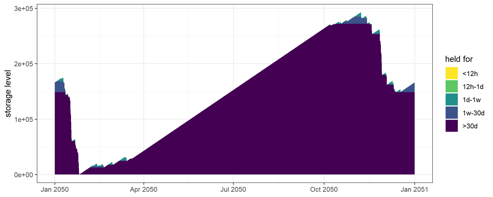
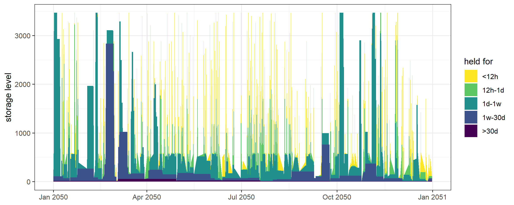

commodity demand storage supply technology weather
8 1 2 5 13 6 Solve it · measure it · shrink it · stretch it · price its carbon
Every model so far was hand-built, small enough to hold in your head.
This one comes from PyPSA-Eur: Belgium as a copperplate — one node, no transmission, a full 8,760-hour year of real plant, weather and demand.
| file | regions | timeslices | variables |
|---|---|---|---|
belgium_copperplate.rds |
1 | 8,760 | ~473,000 |
belgium_model.rds |
5 | 168 | ~40,000 |
eu41_model.rds |
41 | 8,760 | ~28 million |
Anything written for one runs on the others. What changes is what it costs.
Use Julia/HiGHS beyond toy size, and always sample the calendar for the European model.
year_fraction = 1, so pTimesliceWeight = 1 is simply correct, not a convention to argue aboutFuel is free at the supply. PyPSA puts fuel cost on the generator, so the price sits in each technology’s varom.
Carbon rides on the commodity: GAS 0.198, OIL and WST 0.2571 t CO₂/unit.
Solver directory: scenarios/be-cp_d365-h24/script/julia_highs
Writing files: 1.06s
Starting JuMP
404.3s
Reading solution: 1.91s[1] 82606263058,260,626,305 — about 4½ minutes.
Genuinely annual system cost: annualised capital plus a full year of operating cost. On a sampled model it would not be.
model_size: be_cp
parameters : 143 value, 260 maps, 13 sets
param rows : 286,655
estimate : ~473,133 variables, ~508,159 constraints (from gating maps)
top parameters by rows:
pTechVarom 113,880
pTechCinp2use 61,320
pWeather 40,941
pTimesliceShare 9,126
pDemand 8,760
pTechAf 8,760
pStorageInpEff 8,760
pStorageOutEff 8,760
pStorageCostOut 8,760
pStorageCinp 8,760
pStorageCout 8,760
pTechCap2act 13
pTechCap 11
pTechEac 9
pTechWeatherAf 6| parameter | rows |
|---|---|
pTechVarom |
113,880 |
pTechCinp2use |
61,320 |
pWeather |
40,941 |
pDemand |
8,760 |
pTechCap |
11 |
Every leader is indexed by timeslice. ~40 objects on one region → 473,133 variables, purely because the year is resolved hourly.
Temporal and regional resolution are the expensive decisions.
| step | rows | size |
|---|---|---|
| raw | 1,942,567 | 116.4 MB |
| +sparse | 1,536,711 | 97.4 MB |
| +prune | 1,536,711 | 97.4 MB |
| +fold | 1,308,977 | 84.5 MB |
| +trim | 1,536,711 | 97.4 MB |
prune and trim remove nothing — the mapping layer already built these parameters over exactly their equation domains.
Diagnostics first, savings second.
The model carries the whole year; a scenario can be solved on a subset.
model_size: be_s
parameters : 143 value, 260 maps, 13 sets
param rows : 10,101
estimate : ~15,645 variables, ~16,783 constraints (from gating maps)
top parameters by rows:
pTechVarom 3,744
pTechCinp2use 2,016
pWeather 1,355
pTimesliceShare 301
pTimesliceWeight 301
pTimesliceAgg 300
pDemand 288
pTechAf 288
pStorageInpEff 288
pStorageOutEff 288
pStorageCostOut 288
pStorageCinp 288
pStorageCout 288
pTechCap2act 13
pTechCap 118,157,519,902 vs the full year’s 8,260,626,305 — 1.25% low, ~20 s instead of 4½ minutes.
A four-day sample is 3.10% off and picks a different solar technology. Sampling is a modelling decision, not a convenience.
| back-end | 288 slices | 8,760 slices |
|---|---|---|
| glpk | 2.0 s | 1,384 s (23 min) |
| julia_highs | 20.2 s | 275 s |
| pyomo_glpk | 6.4 s | — |
| pyomo_cbc | 5.2 s | — |
Objectives agree to every digit printed; CBC differs by 1.55 — 1.9 × 10⁻¹⁰. Tolerance. A third-digit difference would be a template bug or an early stop.
The ranking inverts with size. GLPK is fastest on the sample and 5× slower on the full year. Measure; don’t assume.
start mid end
<num> <num> <num>
1: 2025 2025 2025
2: 2026 2028 2030
3: 2031 2033 2035
4: 2036 2038 2040
5: 2041 2043 2045
6: 2046 2048 2050Milestones land on 2025, 2028, 2033, 2038, 2043, 2048 — each at its interval’s mid-point. Check, don’t assume.
Objective 15,187,226,948, CO₂ zero, and by 2048: solar-hsat 15,191 · biomass 10,999 · onwind 7,067 · offwind-dc 6,018
The base model has 113 MW of biomass, and PyPSA marks it non-extendable.
vintage cluster region year stock cap.lo cap.up cap.fx ncap.lo ncap.up
1 <NA> <NA> BE0_0 2050 113 NA NA NA NA NA
ncap.fx ret.lo ret.up ret.fx
1 NA NA NA NA vintage region cluster start end olife
1 <NA> NA <NA> NA 2049 NAThe converted model describes a single year, 2050 — and does not know it.
vintage$end = 2049; every milestone 2025–2048 falls before that, so the window is openyear = 2050, so a cap.up there never applies to earlier milestones| as shipped | fixed | |
|---|---|---|
| objective | 15,187,226,948 | 21,501,935,951 |
| CO₂ | 0 | 1,155,508 t |
| biomass 2048 | 10,999 MW | 113 MW |
42% too cheap, reporting zero emissions for a system burning 4.6 M of gas.
optimizeRetirement = TRUE lets the model scrap plant early.
Result: objective identical, nothing retires.
Predict the direction before running it — retirement is an option, and an option never makes the optimum worse.
Nothing retired ⇒ the option was worthless. Report that. Do not tune until something moves.
| tax | CO₂ | abated |
|---|---|---|
| 0 | 380,814 | — |
| 10 | 357,103 | 6% |
| 30 | 254,244 | 33% |
| 60 | 216,577 | 43% |
| 120 | 113,828 | 70% |
Not smooth. 10→30 triples the price for 27 points; 30→60 doubles it for 10.
Each kink is a technology switching. You cannot interpolate between two runs.
| cap | CO₂ | objective | avg cost/t |
|---|---|---|---|
| 100% | 380,814 | 8,157,519,902 | — |
| 75% | 285,611 | 8,187,324,954 | 313 |
| 50% | 190,407 | 8,316,370,475 | 834 |
| 25% | 95,204 | 8,635,818,535 | 1,675 |
Every cap binds exactly. Cost per tonne 313 → 834 → 1,675: a convex marginal abatement cost curve, steep because the base already took the cheap options.
Infeasibility is information, not an error to code around.
| policy | CO₂ | objective | vs base |
|---|---|---|---|
| base | 380,814 | 8,157,519,902 | — |
| tax 60 | 216,577 | 8,652,652,655 | +495,132,753 |
| cap 50% | 190,407 | 8,316,370,475 | +158,850,573 |
The tax costs 3× more while abating less.
The cap’s increase is resource cost. The tax’s is resource cost plus a transfer — it charges the price on every remaining tonne (~13 M at 60/t).
Never compare a tax and a cap on objective value alone.
Full year, no sampling: this one is checked against PyPSA to the cent.
| energyRt | PyPSA | |
|---|---|---|
| base | 8,260,626,305.45 | 8,260,626,305.45 |
| demand ×2 | 13,387,554,321.05 | 13,387,554,321.06 |
31,162.8 MW built on both sides: CCGT +10,250.9, solar +9,281.7, solar-hsat +9,231.4, onwind +2,398.8 — each within 0.05 MW.
62% more cost for 100% more demand.
Capacity says how much. storage_duration() says how long it stays there.
[1] "<12h" "12h-1d" "1d-1w" "1w-30d" ">30d" | band | STG_BATTERY | STG_H2 |
|---|---|---|
| <12h | 24.3% | 0.01% |
| 1d–1w | 40.8% | 0.41% |
| >30d | 1.3% | 98.4% |
Two stores, same units, almost no overlap.

Fills through summer, drains through winter. Nothing declared H₂ seasonal — no cycle count, no duration parameter. It came out that way.

And this is why sampling is a modelling decision. A twelve-day sample has no 30-day window, so 98.4% of the H₂ result cannot exist in it — the store would appear small, cheap and busy, with no error and no warning.
PyPSA-Eur → OpenStreetMap grid, powerplantmatching, ERA5 + SARAH-3 weather via atlite, ENTSO-E/OPSD demand → converter → energyRt.
Two licence points that travel with the data:
The entries that do restrict commercial use are sector-coupling inputs and are not in this electricity-only build.
prune that removes a lot is telling you somethingenergyRt · useR! Training